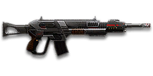

← Back to the T1S Cycler comparison
Sage Guide · Terran Republic · Combat Medic
The 650-cert select-fire rifle for the TR Combat Medic — also open to Engineers and Heavy Assaults with ASP. It trades a little killing speed for the widest attachment choice of any TR rifle, including the underbarrel grenade launcher.
The one-line verdict: a steady, versatile rifle that rewards good aim and short bursts, and punishes spray-and-pray. Fight between 10 and 50 metres and it will carry you.

The T1S Cycler · Terran Republic · 40-round magazine · 650 certs / 499 DBC
Picture the scene, because you've probably lived it: you're sprinting across a courtyard, an enemy appears, and you do everything at once — hold the trigger down while you're still running, then press aim-down-sights (ADS) a split-second later, finger still down. The sight picture snaps in, it looks precise… and your bullets spray everywhere except the man in your crosshair. He kills you. It feels like the game cheated. It didn't — here's what actually happened.
Three moments, one bad habit. Read left to right.
Read it this way: the disaster is set before the sight ever comes up. Sprinting puts your cone at 7.0°, hipfiring widens it further (+0.1° per shot), and pressing ADS does not shrink a cone that is already bloomed — the scope only gives you a precise picture. Your bullets keep flying out of the wide cone you built while running.
Same courtyard, same enemy. Three beats, in order — never two at once.
Stop → aim → fire. If you take one habit from this entire page, take this one. You'll practise exactly this rhythm in the simulator in section 04.
Inside about 11 metres, don't ADS at all — hipfire and keep moving. No sight to raise, no settling to wait for, and stopping is optional: the moving hipfire ring at 11 m is only about 0.48 m wide, so it still covers his chest. The three-beat fix is a mid-range habit; up close, your movement is your defence.
You started firing from a sprint, from the hip. Sprinting is the least accurate state in the game: your cone of fire starts at 7.0° — fully bloomed, the widest it can ever be. Every shot you fire from the hip widens it further still (+0.1° per shot).
Then you pressed ADS mid-hold — and nothing reset. Aiming down sights does not shrink a cone of fire that is already bloomed. The scope only gives you a precise picture; the bullets keep flying out of the wide cone you built while running and hipfiring. That's the whole mystery: accurate-looking aim, wildly inaccurate gun.
Two timers stack the deck further: your gun needs about 0.3 s to settle after a sprint, and raising the sight itself takes ~0.15 s. Trigger held through all of it means your first half-second of fire is pure confetti.
1 · Feet. Let go of sprint (and the trigger, if you're already holding it). Stop, or drop into a strafe — anything but a full sprint.
2 · Sight. Press ADS and let the sight come up. This takes a heartbeat — that's fine, you stopped first.
3 · Trigger. Now fire. Starting from the aimed cone of 0.1°, your first shots land where the dot points, and you control the bloom from zero instead of inheriting a maxed-out cone.
Stop → aim → fire. If you take one habit from this entire page, take this one. You'll practise exactly this rhythm in the simulator in section 04.
Every enemy infantry has 1,000 health (500 shield + 500 health). Your bullet does 143 damage up close, fading to 112 at long range. Headshots count double, leg shots count less (×0.9). That gives you three numbers worth memorising:
| Range | Damage | Head | Chest | Legs | Chest vs shielded Heavy |
|---|---|---|---|---|---|
| Close · 0–10 m | 143 | 4 | 7 | 8 | 11 |
| Mid · 10–50 m | 143→125 | 4 | 8 | 9 | 12 |
| Far · 50–80 m+ | 125→112 | 5 | 9 | 10 | 13 |
Perfect-accuracy times to kill: 4 headshots ≈ 0.26 s, 7 chest shots ≈ 0.52 s up close. In real fights you'll land maybe half your rounds — still, this is why the head matters so much on this gun.
Full power to 10 m, then a steady slide to 125 at 50 m and 112 at 80 m. The gold line shows Soft Point Ammunition, which stretches full power to 15 m.
Your rifle's job changes with distance. Up close, movement is your defence; at mid-range, your aim and your bursts are; past 50 m, you are mostly reminding the enemy you exist.
Your hipfire ring is tiny this close. Even running, the cone is only about 0.35 m wide at 8 m — inside a man's chest. So don't ADS, don't stop: hold A or D, keep your crosshair on his torso, and let the trigger sing. The hipfire ring stays chest-sized out to about 11 m.
Aim: torso. Keep strafing. Don't reload mid-fight — your 40-round magazine is enough for two kills here.
Full damage, manageable spread, time to aim. Stop, ADS, and fire bursts of 5 at the neck — the first shot kicks 0.525° up and the rest climb straight up, so the neck is where headshots happen.
Aim: neck. Bursts of 5, release, let the cone shrink, repeat. Hold a wide strafe between bursts.
Damage is fading (143 → 125), so every bullet has to count. ADS, stand still or crouch, and fire disciplined bursts of 3–5. At this distance a 10-round spray is just noise — you'll lose the duel to someone bursting.
Aim: upper chest. Switch to the 3-round burst mode (B) if your finger gets greedy.
Past 50 m your bullet is down to 112 damage and 9 chest shots to kill. Tap-fire: one shot at a time, wait for the cone to settle between shots. If he's behind cover, stop shooting — you're only giving away your position. A Medic's job here is usually to close the distance or heal the people doing the shooting.
Aim: head height on a still target, chest if he's moving. Switch to semi-auto (B) for the slowest, steadiest shots.
Your cone of fire — how wide your bullets scatter — depends on what your body is doing. Standing still and aiming is 25× more accurate than sprinting. Learn the table, then feel it in the simulator below.
| Stance | Cone (degrees) | What it means |
|---|---|---|
| Sprinting | 7.0° | Don't shoot — wait 0.3 s after you stop. The sprint cone is 70× wider than aimed. |
| Hipfire, moving | 2.5° | Your strafe-fight cone — tight enough at 10 m to hit a chest. |
| Hipfire, standing | 2.0° | Standing still, hipfire — fine in a doorway. |
| Hipfire, crouched | 1.5° | Crouching tightens the hip cone further (crouch-walk: 2.0°). |
| Aimed (ADS), feet planted | 0.10° | A laser. This is the cone you want for every mid-range kill. |
| Aimed (ADS), strafing | 0.30° | Strafing while aimed is 3× wider than standing still — still very accurate. Move speed halves (0.5×) while ADS. |
The cone grows by +0.05° per shot aimed (and +0.10° per shot from the hip), starting from shot 1. It shrinks back at 20°/s when you stop firing — that's why short bursts stay accurate and long sprays don't.
| Mode | How | When to use it |
|---|---|---|
| Automatic | Default. Hold the trigger — fires until you release. | Your default. Burst by hand: pull, release, pull. |
| 3-round burst | Press B once. Exactly 3 shots per trigger pull. | 25–50 m, when your finger gets greedy in full-auto. |
| Semi-auto | Press B again. One shot per click. | 50 m+ plinking — the slowest, steadiest shots. |
The burst mode has no special properties — it just stops after three shots. A disciplined finger in full-auto does the same thing, so most players leave the switch on Auto and burst by hand.
| Style | Shots | When |
|---|---|---|
| Mag dump | Hold it down | Only under 8 m, hipfire, and only if he's right in front of you. |
| Bursts | 5, then release | Your default. 5 shots is ideal — the cone has grown by only 0.25°; 6–8 is forgivable if the target is close. |
| Tap-fire | 3–5, patient | Past 50 m — and the simulator below is built for exactly this. |
Press and hold the red button — or tap it in bursts — and watch the cone bloom. Target at 30 m. Shots that land inside the green ring are hits. The cone grows by 0.05° per shot from shot 1, and shrinks back while you wait.
Try this: hold for 12 shots — count the misses. Now tap in bursts of 5 with a half-second pause — the cone resets between bursts. Same gun, same target, very different result.
Same distance, same gun — the rings show how wide your bullets scatter. The green circle is the enemy's chest, 0.6 m across.
Reading it: even while moving, your hipfire ring at 8 m is 0.35 m wide — smaller than the green chest circle (0.6 m). That's why the hipfire exception in section 01 works: up close, you don't need to ADS to hit him. Standing still shrinks the ring to 0.28 m, and the Laser Sight shrinks it to 0.19 m.
Five shots, ADS, first shot at the neck. Recoil climbs straight up, so the group climbs straight up.
Read it: aim at the neck and the recoil does the work for you — shot 1 lands on the neck, the climb walks the next shots up into the head. That's the whole "aim at the neck" trick: let the gun lift your aim into the headshots.
Same target, same distance — but the trigger held down. The cone is now 0.60° and still growing.
Read it: after 10 held shots the cone is 0.60° — six times wider than the first shot — and half your bullets miss the chest entirely. Release after 5, let it shrink, then burst again.
Same view as your iron sights, only cleaner. Target at 35 m.
1× RTA Reflex (30 certs): your default. The dot sits on his chest, you can still see the room around him. Best for the 8–25 m fights this gun lives in.
Same target, same distance — twice as big in the glass, half as much room around him.
2× MH2 Reflex (30 certs): take it for open ground and 25–50 m fights. The target is twice as big, so your aim point is clearer — but you see less of the room, so it's the wrong pick for a point hold.
The T1S costs 650 certs to unlock, and it arrives bare — iron sights, no grip, no extras. That's fine: the gun is already good. Everything below is an optional sidegrade, not an upgrade. Buy in the order shown and stop whenever the gun feels right. One warning first: there is no Heavy Barrel and no Extended Magazine for this gun — they simply don't exist for the T1S, so if a loadout video tells you to buy one, it's for a different weapon.
Clean, usable, and free. The T1S's irons don't get in your way.
A simple red dot, same zoom as irons, much clearer picture.
Target appears twice as big; you see less of the room around him.
Thermal-style highlight: enemies glow against a dark background, day or night.
Big zoom for a rifle that stops being useful past 50 m.
The bare muzzle is a perfectly good choice on this gun.
−30% vertical recoil; +15% hipfire cone; you appear on the enemy minimap 35 m farther when firing.
Hip bloom −40% (tighter hipfire bursts); +20% vertical recoil while ADS.
Quiet; you don't appear on the minimap when firing. Damage falls off 20 m sooner; velocity −15% (580 → 493 m/s).
Hides your muzzle flash; +15 m minimap range when firing.
−25% horizontal recoil; +0.15 s equip time (the gun comes out a little slower).
+33% hipfire accuracy — the hip cone shrinks to ×0.67 (2.5° → 1.7° moving).
First-shot vertical recoil −60% (the big 0.525° kick becomes 0.21°); +10% horizontal recoil.
Single-shot underbarrel grenade; arms after 10 m; +0.25 s equip time. Toggle with Gear Slot 1.
Single-shot underbarrel smoke; +0.25 s equip time. Toggle with Gear Slot 1.
Single-shot underbarrel shotgun; +0.25 s equip time. Toggle with Gear Slot 1.
Reveals cloaked infiltrators. Toggle with the attachment key (X).
Full 143 damage stretches from 10 m to 15 m; velocity −10% (580 → 522 m/s).
Velocity +10% (580 → 638 m/s); min-damage range +20 m (80 → 100 m); max-damage range −2 m (10 → 8 m).
Copy one of these and go play. The "cost" is attachments only — the gun itself is 650 certs on top.
0 certs · the gun, as bought
Use it for: your first sessions. The gun is good bare — learn the recoil and the ranges before you spend anything.
230 certs · the default build
Use it for: everything. This is the build the rest of the page assumes.
230 certs · indoors
Use it for: biolabs, towers and point rooms, where every fight is hipfire inside 11 m.
130 certs · squad support
Use it for: squad play — lob a grenade into the doorway, then push in with the rifle. The reason you bought this gun.
4 headshots kill up close (0.26 s) versus 7 chest shots (0.52 s). Aim at the neck and let the straight-up recoil walk the next rounds into his head — you get headshots without having to aim at a moving head.
Five shots, finger off, half a second, five more. The cone resets while you wait. A held trigger after shot 8 is just confetti — the cone is 0.50° wide and still growing.
A reload with rounds still in the mag takes 2.52 s; an empty reload takes 3.25 s. Fire about 25 rounds, then reload behind cover while you still have 15 left. Dying with a half-empty mag is the most avoidable death in the game.
Point your crosshair at head height where he'll appear, then strafe sideways while you fire. He has to track a moving target; you have to track a still one. In ADS your move speed halves — so strafe between bursts, not during them.
Past 50 m your damage falls to 112 and kills take 9 chest shots. If he's far away, close in, let someone else shoot him, or don't shoot at all — a long-range duel you lose slowly is worse than no duel.
Your rifle is only half the job. After every kill, top up your squadmates and revive the fallen. A Medic who wins the fight and brings the squad back to full health is worth two riflemen.
The T1 Cycler — the starter rifle you got for free — fires faster (750 RPM vs 698) and kills about 7% quicker in every range band. The 650 certs didn't buy you speed; they bought you versatility: burst and semi-auto modes, the grenade launcher, the whole attachment list. If all you want is raw killing speed, the free gun is better.
The fix: win with your head — the grenade launcher, the burst modes, and better positioning are what you paid for.
Forty rounds is generous for one kill, thin for two, and hopeless for three. There is no Extended Magazine for the T1S — the slot doesn't exist. Spraying a whole mag at one man leaves you reloading in front of his friend.
The fix: burst, and reload after ~25 rounds behind cover (see habit 3 above).
Past 80 m your bullet does 112 damage — 9 chest shots to kill, and the target has time to walk behind a rock between them. Long-range duels are the T1S's worst fight.
The fix: tap-fire, or don't take the fight. Close the distance or let a teammate with a longer-range gun handle it.
The first shot kicks 0.525° up and every shot after adds 0.30°, all straight up. Hold the trigger and your aim walks over his head in half a second. The horizontal wobble is small (0.225°), so the fix is simple: pull straight down.
The fix: pull down smoothly as you fire, and burst — the cone resets between bursts.
ADS cuts your move speed to 0.5×, and the equip time is 0.65 s — if you round a corner with your tool out and try to swap to the rifle, you're dead before it comes up.
The fix: have the rifle out before you enter the room, and strafe between bursts rather than during them.
VR Training costs nothing and the targets don't shoot back. Run these once and the habits above stop being theory.